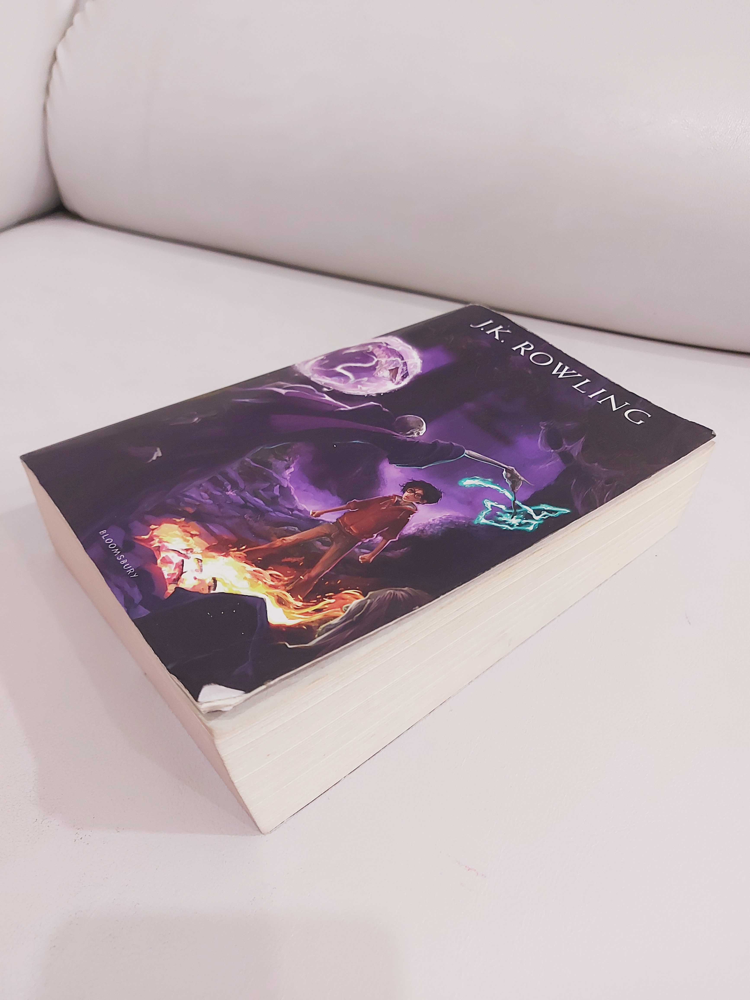
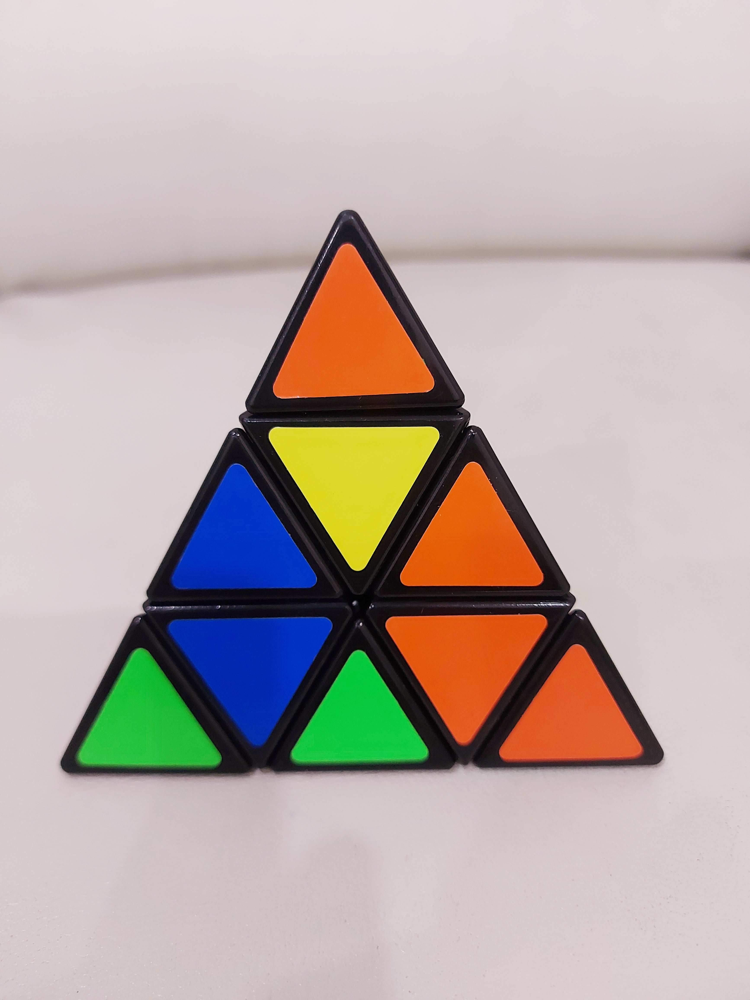
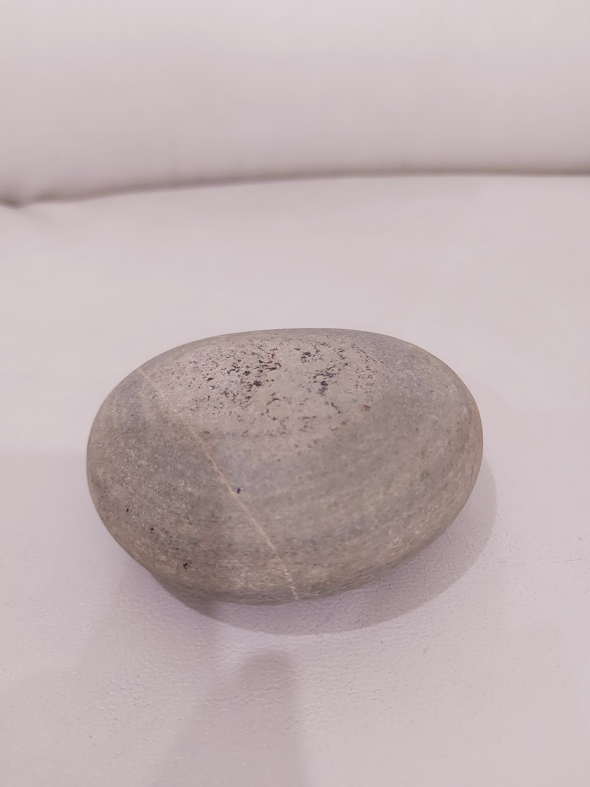

Google Lense - Fictional Chareacter
1. Test Image - Book
Google Lense - Fictional Chareacter
Mobile Net - Padlock
Google Lens is more accurate

Google Lense -
crushing hazard sign
2. Test Image - Pyramid Puzzle
Google Lense -
crushing hazard sign
Mobile Net - Umbrella
Google Lens is more accurate

Google Lense - Artifact
3. Test Image - Stone
Google Lense - Artifact
Mobile Net - Band Aid, Shield
Google lens is more accurate

4. Test Image - Toy Helicopter
Google Lense - Helicopter Roter
Mobile Net - Wheel
Google Lens is more accurate